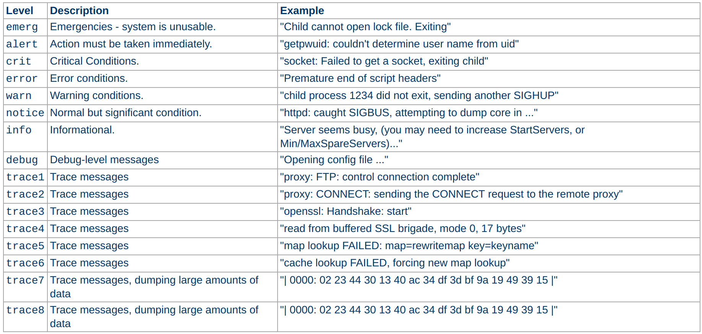

#在Ubuntu下载安装Apache1
2
3
4
5
6安装apache
sudo apt-get install apache2
开始或停止apache程序的命令,两种方法:
service apache2 start | restart| stop
sudo /etc/init.d/apache2 start | restart | stop
apache是模块化的服务器，只有最基础的功能包含在内核服务器中，可以通过加载模块来拓展服务器的功能，基础模块已经提前静态编译加载，通过shell命令 1
2
3
4
5------
# apache配置文件设置
1. **apache主配置文件一般在/var/apache2/apache2_conf**
配置文件中通过指令来控制服务
2. 分布式配置文件 **.htaccess**，提供了针对目录改变配置文件的方法，在某个目录中创建一个.htaccess的纯文本文件，将指令放置在该文件中，则这个目录及其子目录都是这些指令的作用范围
#为目录设置．htaccess配置文件必须在主配置文件apache2_conf中设置以下指令，然后在目录中创建名称为.htaccess的文本文件即可
AllowOverride All1
2
3
4
5
6
- 指令不区分大小写，但指令的参数区分大小写
- 语法: 指令名 参数 指令和参数之间用空格隔开，如果参数中含有空格，需要用＂＂来包裹
- 指令有多个参数值时，多个值之间用空格隔开 指令 参数１ 参数２
- 配置文件中可以通过```${variable_name}```来引入系统环境变量，也可以通过```define```指令来自定义参数,还可以通过命令行```$ apachectl -Dvariable_name 来自定义参数
- 检查配置文件是否有语法错误```$ apachectl -t```或则```$ apachectl configtest
apache各指令描述
指令有作用范围，(当直接在配置文件中写入指令，没有section包裹时)默认为全website
section表示被包裹指令的作用范围，通常有两种模式：１.文件系统模式，2.网址URL模式
- 文件系统section
2
3
4
5
6
7
8
9
10
11
12
13
14
15
16
17
18
目录名称可以使用通配符号*(通配所有字符串)?(通配一个字符)［］(通配括号中的一个字符)
<Directory /var/www/html/example>
指令...
</Directory>
包裹的指令只作用在相对路径为example.html的文件上，无论这个文件在哪个目录下
目录名称可以使用通配符号*(通配所有字符串)?(通配一个字符)［］(通配括号中的一个字符)
<Files example.html>
指令...
</Files>
<Directory>中可以嵌套<Files>,表示包裹指令的作用范围为目录/var/www/example及其子目录中名称为test.html的所有文件上
<Directory /var/www/example>
<Files test.html>
指令...
</Files>
</Directory>
网站url匹配模式section
1
2
3
4
5
6
7
8
9
10
11
12
13
14
15
16
17
18
19
20一个apache服务器可以同时为多个网址提供web服务，称之为虚拟机(virtual host),可以设置指令作为在某个具体的虚拟机上
表示指令只作用在ip为10.1.2.3:80这个虚拟机上,当收到指向该IP的request时会执行其包裹的指令
<VirtualHost 10.1.2.3:80>
指令...
</VirtualHost>
包裹指令作用范围为全网站(URL)匹配url符合正则表达式的文件
路径名称中可以使用通配符号*(通配所有字符串)?(通配一个字符)［］(通配括号中的一个字符)
若服务器d的url为http://www.example.com:80,则匹配所有url的path中包含/example的所有文件和目录
<Location "/example">
指令...
</Location>
匹配url中以http://www.example.com:80/example开头的文件和目录
<Location "^/example">
</Location>
下面匹配url中的path中包含/example/的目录和子目录文件,不包含file /example
<Location "/example/">
</Location>
url匹配，在原始请求(即非代理的请求)中不需要加入scheme,hostname,post等直接从/Path/开始匹配，在代理请求中需要匹配使用完整的URL包括scheme,hostname,port等采用正则表达式来匹配section
1
2
3
4
5
6
7
8
9
10
11
12
13
14
15作用于目录路径中匹配正则表达式的所有目录
匹配所有根目录中以example开头的所有目录
<DirectoryMatch "^/example">
指令...
</DirectoryMatch>
匹配所有根目录中及子目录中以example开头的所有文件
<FilesMatch "^/example">
指令...
</FilesMatch>
全网匹配URL包含该正则表达式的文件和目录
<LocationMatch "^/example">
指令...
</LocationMatch>
指令执行的条件判断
当判断条件才决定是否执行条件包裹的指令，有两种形式，test(条件为true时执行)，!test(条件为false时执行)
2
3
4
5
6
7
8
9
10
11
12
如果条件是!module_name，则表示当没有加载module_name时才执行指令
<IfModule module_name>
指令...
</IfModule>
在启动服务时，若ｖariable_name参数被定义了则执行，否则不执行
条件为!variable_name，则判断条件相反 <IfDefine>可被嵌套
<IfDefine variable_bame>
指令...
</IfDefine>
各项指令描述(有些指令只能在特定的section才能其作用)
1 |
|
- 关于导出运行日志的指令
运行日志按照严重性大致分为4类：error,warn,info,debug，在apache中细分为8个等级
1
2
3
4
5
6
7
8
9
10
11
12
13
14设置错误日志的输出文件
语法 ErrorLog 文件绝对路径或相对于根目录的相对路径
linux默认的输入日志文件的路径为${APACHE_LOG_DIR}/error.log有系统环境变量APACHE_LOG_DIR控制
将服务的错误日志输出到/var/www/error.log文件中
ErrorLog /var/www/error.log
设置打印日志的格式
ErrorLogFormat
设置打印日志的等级
语法 LoginLevel 等级名称 (设置的日子等级及以上等级的日志都将被打印)
打印debug以上的等级日志
LoginLevel debug
在配置文件中加载新模块是通过L
LoadModule指令来完成的